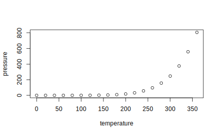

2.1 Making ggplots
2.1.1 Basic Features
Let’s begin by installing and loading the ggplot2 package:
With the last command, we can use all the functions in the ggplot2 package until the end of the current R session.
Skeleton: In its simplest form, a ggplot consists of two parts: The core ggplot() function and a chain of additional functions pasted together using the plus (+) sign defining the exact type of plot to be made.
ggplot()function: The \(\boxed{ggplot()}\) function initializes the plot, defines the source of data using thedataargument (almost always a data frame), and, most importantly, specifies what variables in the data are “mapped” to visual elements in the plot by the mapping argument. Mappings in ggplot are specified using the \(\boxed{aes()}\) function, withaesstanding for “aesthetics”. They determine the role different variables play in the plot. The variables may, for instance, correspond to visual elements such as the x- or y-variables, color, size, and shape, specified by thex, y, color, size, and shapeaesthetics, respectively.geom_()functions: Subsequent to theggplot()function, we put in geometric objects, or geoms for short, which include points, lines, bars, histograms, box-plots, and many of other possibilities, by means of one or more geom functions. Placed layer by layer, these geoms determine what kind of plot is to be drawn and modify its visual characteristics, taking the data and aesthetic mapping specified in theggplot()function as inputs.
Here is the generic structure of a ggplot (The uppercase letters are placeholders.):
ggplot(data = DATA, mapping = aes(AESTHETIC_1 = VARIABLE_1,
AESTHETIC_2 = VARIABLE_2,
...)) +
geom_TYPE(...) +
geom_TYPE(...) +
OTHER_FUNCTIONS +
...Case Study: Personal Injury Insurance Data set
To illustrate data visualization and exploration techniques, in this chapter we will look at a personal injury insurance data set. This data set contains the information of 22,036 settled personal injury insurance claims. These claims were reported during the period from July 1989 to the end of 1999, with claims settled with zero payment excluded. The variables in the data set are described in Table 2.1.
| Variable | Description |
|---|---|
| amt | Settled claim amount (continuous numeric variable) |
| inj | Injury code, with seven levels: 1 (no injury), 2, 3, 4, 5, 6 (fatal), 9 (not recorded) |
| legrep | Legal representaytion (0 = no, 1 = yes) |
| op_time | Operational time (a standardized amount of time elapsed between the time when the injury was reported and the time when the claim was settled) |
In Section 4.2, we will build a model to predict the size of personal injury insurance claims using the other variables in the data set. For now, we will perform data exploration of the variables in the data set. The insights we gain here will go a long way towards constructing a good predictive model.
persinj <- read.csv("data/persinj.csv")
# Take out a subset of 50 observations from the full set of data
persinj50 <- persinj[seq(1, nrow(persinj), length = 50), ]
persinj50
#> amt inj legrep op_time
#> 1 87.75 1 0 0.1
#> 450 195.60 1 0 1.9
#> 900 6777.93 1 1 3.8
#> 1350 8738.44 1 0 5.7
#> 1799 3555.73 6 0 7.5
#> 2249 5158.06 2 0 9.4
#> 2699 5612.93 1 1 11.2
#> 3148 8994.05 1 0 13.1
#> 3598 1570.34 1 1 14.9
#> 4048 5735.00 1 0 16.8
#> 4497 15702.67 1 0 18.7
#> 4947 15602.52 1 1 20.6
#> 5397 5445.00 1 1 22.5
#> 5847 32935.42 1 1 24.4
#> 6296 2568.08 1 1 26.3
#> 6746 9349.03 1 0 28.2
#> 7196 2726.51 1 0 30.0
#> 7645 10907.30 2 0 31.8
#> 8095 25149.49 2 1 33.8
#> 8545 11683.60 1 0 35.7
#> 8994 12800.75 1 1 37.6
#> 9444 13500.00 1 1 39.4
#> 9894 1742.62 9 0 41.2
#> 10343 24373.94 1 0 43.1
#> 10793 21907.70 1 1 45.0
#> 11243 47229.71 1 1 46.8
#> 11693 2562.70 1 0 48.6
#> 12142 15459.63 1 1 50.5
#> 12592 42720.13 2 0 52.4
#> 13042 16163.86 1 1 54.3
#> 13491 15446.68 1 0 56.2
#> 13941 174364.45 2 1 58.1
#> 14391 10838.48 1 1 60.0
#> 14840 6500.00 1 1 61.9
#> 15290 36577.13 4 0 63.9
#> 15740 126588.00 1 1 65.7
#> 16189 35599.60 1 1 67.7
#> 16639 48254.71 1 1 69.7
#> 17089 65178.91 1 1 71.8
#> 17539 24684.92 1 1 73.9
#> 17988 578733.84 2 1 75.8
#> 18438 72916.85 1 1 77.7
#> 18888 52935.50 1 0 79.6
#> 19337 71392.93 3 1 81.6
#> 19787 107462.51 1 1 83.8
#> 20237 166986.28 2 1 86.0
#> 20686 15605.74 1 0 88.3
#> 21136 102440.48 2 1 90.8
#> 21586 204022.11 3 1 93.8
#> 22036 117562.73 1 1 99.1As our first example, let’s make a scatterplot for the two numeric variables in the persinj50 data, amt and op_time. The plot, produced by the code below is given in Figure 2.1.1. The code obeys the two-part structure discussed earlier:
ggplot()function: The first line makes it clear that we are using thepersinj50data, where the variablesop_timeandamtare mapped to the variables on the x-axis and y-axis through the x and y aesthetics, respectively. There is no need to name the variables as persinj50%op_time or persinj50$amt as the data source is already specified in the data argument.Geom: Given these mappings, we use the \(\fbox{geom_point()}\) to make a scatterplot ofamt(the y-variable) againstop_time(the x-variable). The plot comprises 50 points corresponding the the 50 paired values of the two variables and allows us to see the two variables in comparison with each other.
Later, we will fine-tune this plot in different ways to capture different sorts of information.
ggplot(data = persinj50, mapping = aes(x = op_time, y = amt), caption="A basic scatterplot of `amt` against `op_time` in the `persinj50` dataset.") +
geom_point(color = "blue")
Now let’s see an example of using the color aesthetic correctly. In the persinj50 data, the legrep variable is a binary variable equal to 1 for injuries with legal representation and 0 for those without.
To color the different injuries according to the presence of legal representation, we map the color aesthetic to legrep treated as a factor.
The resulting scatterplot, generated by the code below is provided, where injuries without legal representation (legrep = 0) are displayed in red whereas those with legal representation (legrep = 1) are displayed in teal. A legend is produced accordingly.
Notice that there is a genuine mapping between the legrep variable and color, with legrep = 0 mapped to the red color and legrep = 1 mapped to the teal color. In other words, the observations are differentiated on the basis of the legrep variable by color.
ggplot(data = persinj50, mapping = aes(x = op_time, y = amt, color = factor(legrep))) +
geom_point()
Important Geoms for Exam PA
| Geom | GraphType | Arguments |
|---|---|---|
| geom_bar() | Bar chart | fill, alpha |
| geom_boxplot() | Boxplot | fill, alpha |
| geom_histogram() | Histogram | fill, alpha, bins |
| geom_point() | Scatterplot | color, alpha, shape, size |
| geom_smooth() | Smoothed Curve | color, fill, method, se |
We will illustrate the use of geom_bar(), geom_boxplot(), and geom_histogram() in Section 2.2. For now, let’s continue with the scatterplots we have just produced and make them more informative.
In the next figure, we plot 50 observations in the persinj50 data set using large points (size = 2) and a small amount of transparency (alpha = 0.5), classify them according to whether they have legal representation or not, and fit a separate smoothed curve to each kind of injuries via the geom_smooth() function. The commands are collected in the next code chunk:
ggplot(data = persinj50, mapping=aes(x=op_time, y=amt, color=factor(legrep), fill=factor(legrep))) +
geom_point(size=2, alpha=0.5) +
geom_smooth()
To make a single smoothed line for all data points, but leave the coloring of points by legrep, move the color aesthetic to the geom_point() function.
ggplot(persinj50, aes(x = op_time, y = amt)) +
geom_point(aes(color = factor(legrep)), size = 2, alpha = 0.5) +
geom_smooth()
Faceting
\(\fbox{Faceting}\) is another useful way to categorize our data into distinct groups. While grouping showcases two or more groups of observations in a single plot, faceting displays the observations in separate plots (known as a “small multiple” plot) produced for each value of the faceting variable placed side-by-side, usually on the same scale, to facilitate comparison.